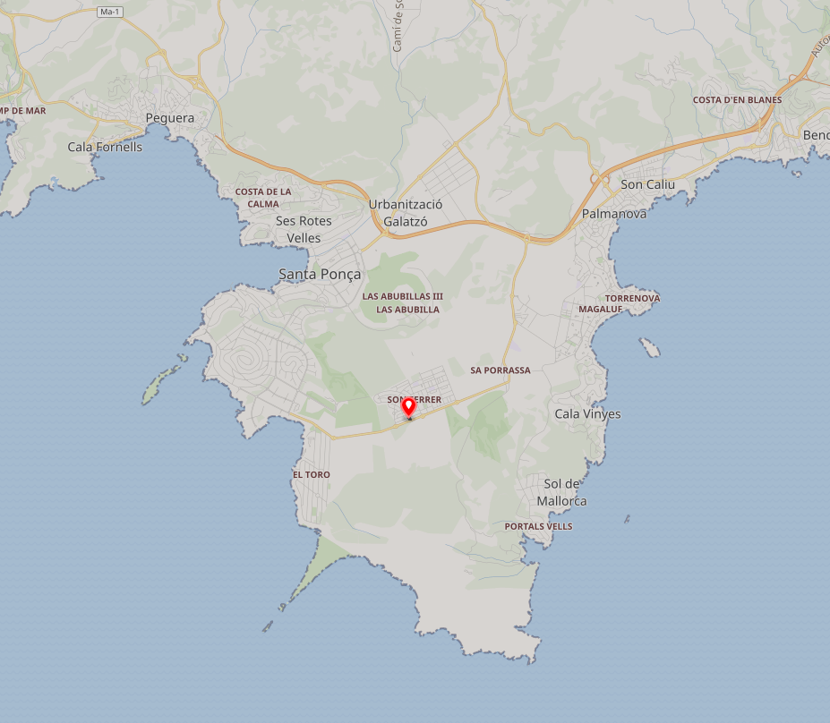

Descripció
El turriforme esglaonat de Son Ferrer, situat al carrer Oronella i flanquejat per xalets al costat del Passeig Calvià, és un dels jaciments més ben coneguts del municipi. Excavat entre els anys 2000 i 2005, està compost per un hipogeu d'enterrament, estructura associada al Bronze Antic i Mitjà i un turriforme escalonat d'època talaiòtica de gran valor simbòlic-estratègic, amb continuïtat d'ús durant l'època post-talaiòtica.
Ubicació
Talaiot de Son Ferrer es troba al carrer Oronella i a prop del Passeig de Calvià.

Imatges